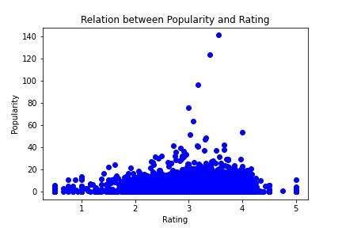

The Past and Future of the Film Industry
The film industry has a long and rich history back to the late 19th century. It plays a significant role in the cultural and economic life of a society. Films are a medium of storytelling and entertainment, and they often reflect the values, beliefs, and experiences of the culture in which they are produced.
Introduction
Due to its cultural features, the film industry presents complexity, which can be seen through the film factors: the distribution of actors, genre, and the development situation of each country, among other factors. In our data story, we will investigate the development history of film and then the key to extraordinary films from the perspective of the film factors, and based on these findings, we will make some predictions. Our story will make you know the past and future of the film industry in one novel sight.
Film Industry’s History
Gender
Films often reflect and shape societal views on gender roles, identity, and expression. In the early days of cinema, women were often relegated to stereotypical roles, such as the dutiful wife or the damsel in distress, while men took on more active and heroic roles. However, as the film industry has evolved and become more diverse, so too have the representations of gender on screen. In recent years, there has been an increased focus on diversity and representation in film, including representation of gender. This has led to the development of more inclusive and diverse storytelling in the film industry, and has helped to create a more nuanced and accurate portrayal of gender in film. In the early stage, the friction of female actors shows a large fluctuating trend. In the later stage, the friction grew steadily. This trend corresponds to the ongoing feminist Movement. With the rise of feminism, female actors have more involvement in the female industry.
In this graph we present the evolution from 1927 to 2012 of the fraction of females actors in the dataset. We have that 0 would mean that there are only male actors, and 1 would mean that there are only female actors.
Genre
Genres in film, like other forms of art and entertainment, can be influenced by a variety of factors, including cultural, social, and technological developments. With development of film capacity, more films of minority genres came to the screen and it increased the diversity of the film industry. Drama and comedy are the most popular genres in the five most common types of films. The gap between different genres decreases, which genres except drama and comedy are more favored, and the genre structure is becoming more diverse.
Here we have two plots. The first one is a pie diagram that describes the percentage of the different movies genres. The second one uses the same color code as in the legend above and allows us to show you the evolution of the said percentages in time.
Actor Age
We also investigate the average age of the actors and it grew over time. Here is one possible reason: The film industry increases the use of special effects technology and actor stand-in. This allows aging actors to extend their career and more actors are still in service.
In this graph we can see the evolution of the average age of actors in time. It shows us the data available in the dataset from 1919 to 2013.
Movie Map
Movie map shows the quantity distribution by movie producing countries. Advances in technology and economy lead to the development of local film industries around the world, which is the film globalization.
During the early stages, the film industry was primarily concentrated in North America, with Europe experiencing rapid development in the mid-stage. In the later stages, the film industry flourished globally. This reflects the globalization of the film industry.
This map of the world allows us to see first, for which countries we do have available data. In white you will see countries that do not appear on our dataset. This could be simply because they do not produce movies or simply because there wasn't any in the dataset. It is also color coded to allow to see the amount of movies per country. And the presence of the color coded dots, allows us to see when has a country been actively producing movies.
Hottest Word in titles
We make WordCloud based on the difference of title frequency before and after 1995, displaying the increasingly popular words after 1995.
Love is the fastest growing word and has been a common theme for many years. It has a broad definition. Besides romantic love, love between friends, family, LGBT, et al are explored in the films and broaden ‘Love’ films. Moreover, ‘peace and love’ is favored by current society and this encourages the ‘love’ films.Black is only the racial hottest word, which corresponds to the racist movement. The movement motivates black filmmakers and actors to tell their stories, and more ‘black’ films are produced, such as ‘Black Panther’ and ‘Green Book’.
This word cloud compares the different in word frequency between before 1995 and after 1995. It was built by splitting the dataset into two subdataset. One is for movies before 1995 and the other is for movies after 1995.These are an interesting period as the amount of data on both sides is similar. And then we calculate the difference of these two sets, and show the positive difference of the second subset in the word cloud.
Rating and Popularity:
Ratings and popularity did not show a positive correlation. In some cases, a high rating may indicate that a work is of high quality and therefore more likely to be popular. On the other hand, a low rating may not necessarily mean that a work is unpopular. Some works, particularly those in the horror, action, and science fiction genres, may be popular despite having a low rating due to their edgy or provocative content.
"
Rating and genre:
Top 150 rated films’ genres are drawn. Similar to the distribution of all films’ genres, drama and comedy are the majority of the genres and there are fifteen minority genres(smaller than 30).
TODO Describe Fraction of female actors
Rating and relevant term:
TODO Describe Fraction of female actors\
Rating and Budget:
The relationship between rating and budget is not strong. Even with a low budget, the rating can be high. However, with a higher budget, the median will increase and the derivation will reduce. In other words, high budget will raise the lower limit of rating and the possibility that the film is in the medium to high range.
TODO Describe Fraction of female actors
Rating Release Year:
As time passes on, the median of ratings is stable at 3.2. In some senses, the standard of rating remains stable over time.
TODO Describe Fraction of female actors
TODO Describe word cloud
-->Prediction
In order to get a better budget for the movie in the pre-production stage. We selected several key variables and performed an OLS regression analysis on the movie budget. On the right side, we provide a budget calculator. You can input the level you expect the movie to reach and thus get the budget for the movie production.
© Untitled. All rights reserved. Design: HTML5 UP.